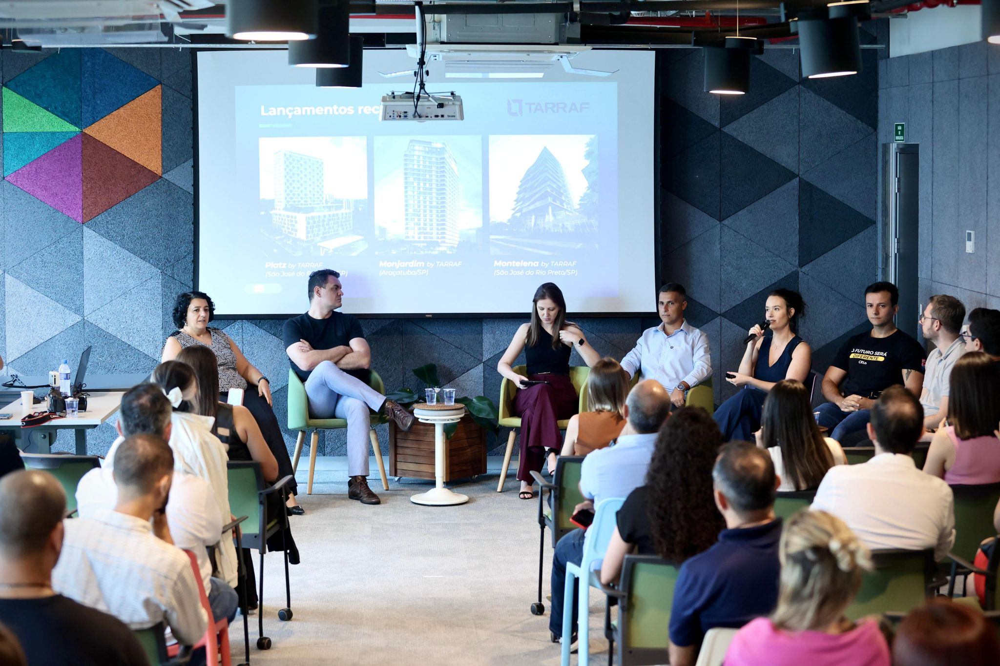

Storytelling de eventos presenciais
Analista de Produtos
Ano: 2025
Fui responsável por repensar o formato de um evento presencial da construção civil, buscando tornar a experiência mais relevante, participativa e conectada com a realidade dos convidados.
Desafio
O evento seguia um formato repetitivo, com baixa participação, temas não muito próximos da realidade local e excesso de discurso de vendas. O público perdia o interesse e não dava retorno pós-evento.
Soluções
Criei um roteiro centrado em temas locais, reduzi o tempo das palestras, levei cases reais com mesa redonda entre incorporadora e equipe técnica, alinhei com todos os envolvidos o novo formato e gamifiquei a participação do convidados com sorteios de brindes.
Resultado
O público participou, perguntou, elogiou e respondeu! A taxa de respostas à pesquisa quadruplicou e o NPS chegou a 87. O evento virou conversa pós-coffee, e gerou reuniões reais para os palestrantes com possíveis clientes.
Aprenizado-chave
Evento bom é evento vivo. Quando a conversa é real, o público se vê no palco. Trazer conteúdo útil, respeitar o tempo das pessoas e deixar espaço para troca faz toda a diferença.